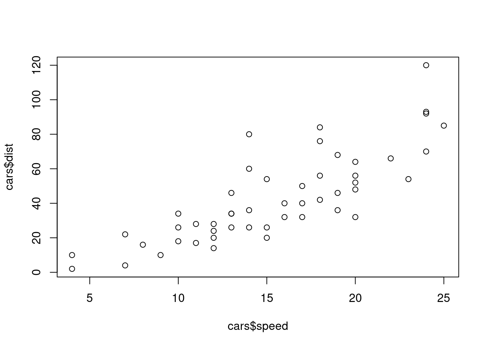
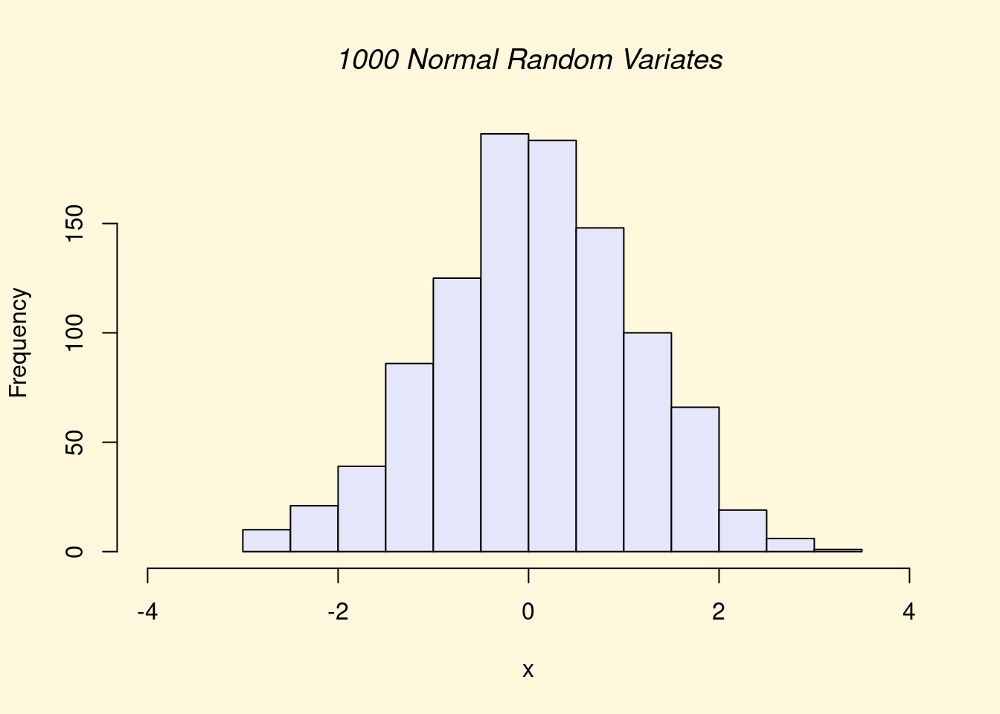
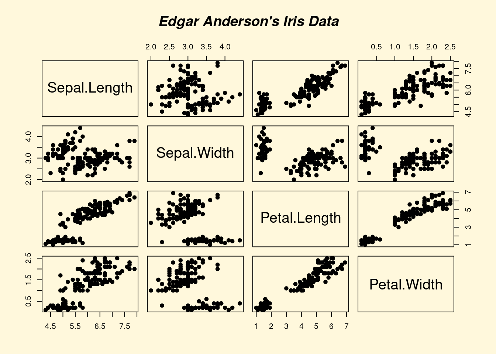
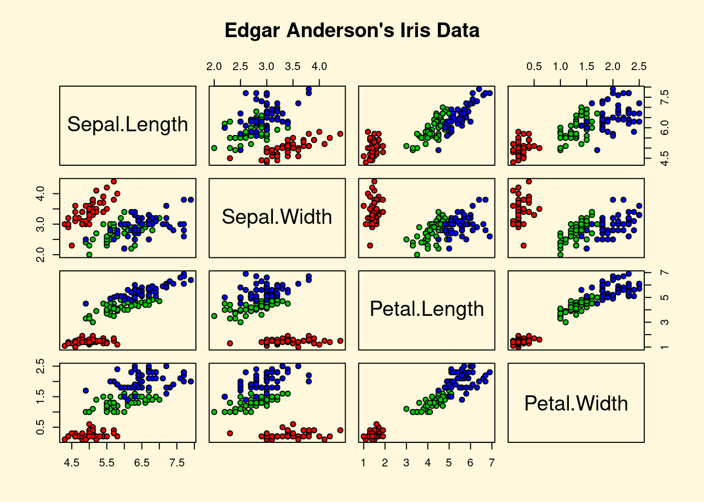
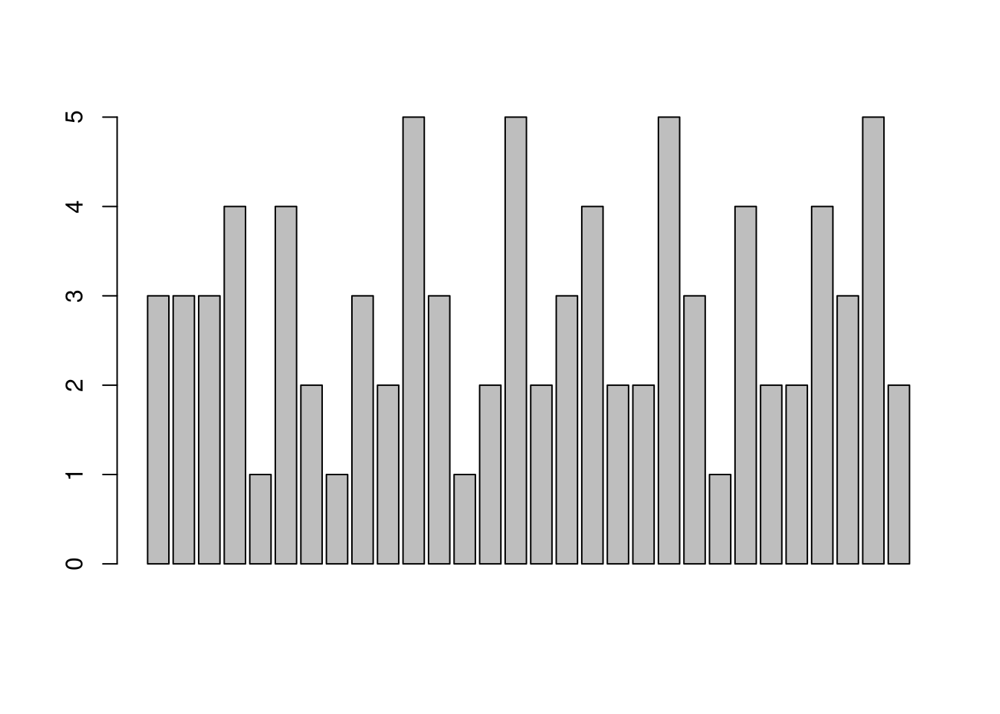
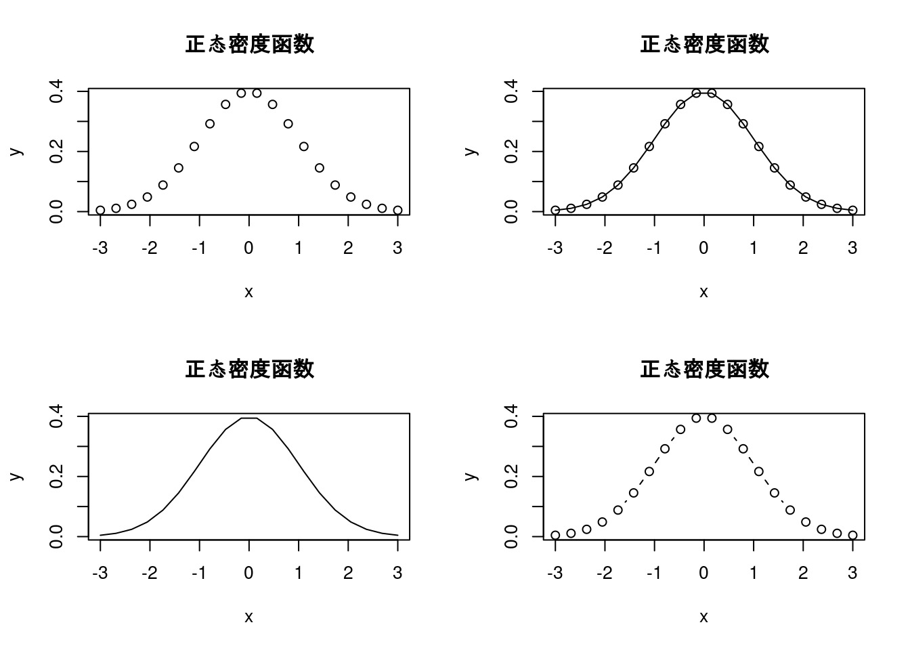

Chapter 2 R语言简介
2.0.1 R语言安装及环境配置
R语言安装（win版）：下载软件
双击，按照提示完成安装（使用默认安装）
Rstudio安装：Studio是R最佳的图形编辑环境
2.0.2 R基础
#试试R编程
x=1:100#把1,2,...,100这个整数向量赋值到x
(x=1:100) #同上, 只不过显示出来## [1] 1 2 3 4 5 6 7 8 9 10 11 12 13 14 15 16 17 18
## [19] 19 20 21 22 23 24 25 26 27 28 29 30 31 32 33 34 35 36
## [37] 37 38 39 40 41 42 43 44 45 46 47 48 49 50 51 52 53 54
## [55] 55 56 57 58 59 60 61 62 63 64 65 66 67 68 69 70 71 72
## [73] 73 74 75 76 77 78 79 80 81 82 83 84 85 86 87 88 89 90
## [91] 91 92 93 94 95 96 97 98 99 100sample(x,20) #从1,2,...,100中随机不放回地抽取20个值作为样本## [1] 83 12 5 72 7 94 59 70 14 40 50 60 41 66 69 100 71 67 26
## [20] 23set.seed(0);sample(1:10,3)#先设随机种子再抽样## [1] 9 4 7#从1,2,...,200000中随机不放回地抽取10000个值作为样本:
z=sample(1:20,5)
z[1:3]#方括号中为向量z的下标## [1] 1 2 11y=c(1,3,7,3,4,2)
z[y]#以y为下标的z的元素值## [1] 1 11 NA 11 14 2(z=sample(x,100,rep=T))#从x有放回地随机抽取100个值作为样本## [1] 59 51 97 85 21 54 74 7 73 79 85 37 89 37 34 89 44 79
## [19] 33 84 35 70 74 42 38 20 28 20 44 87 70 40 44 25 70 39
## [37] 51 42 6 24 32 14 2 45 18 22 78 65 70 87 70 75 81 100
## [55] 13 40 89 48 89 23 84 29 13 22 93 28 48 33 45 21 31 17
## [73] 73 87 83 90 48 64 94 96 60 51 93 34 10 1 43 59 26 15
## [91] 58 29 24 42 48 76 39 24 53 92(z1=unique(z))## [1] 59 51 97 85 21 54 74 7 73 79 37 89 34 44 33 84 35 70 42
## [20] 38 20 28 87 40 25 39 6 24 32 14 2 45 18 22 78 65 75 81
## [39] 100 13 48 23 29 93 31 17 83 90 64 94 96 60 10 1 43 26 15
## [58] 58 76 53 92length(z1)#z中不同元素的个数## [1] 61xz=setdiff(x,z) #x和z之间的不同元素--集合差
sort(union(xz,z))#对xz及z的并的元素从小到大排序## [1] 1 2 3 4 5 6 7 8 9 10 11 12 13 14 15 16 17 18
## [19] 19 20 21 22 23 24 25 26 27 28 29 30 31 32 33 34 35 36
## [37] 37 38 39 40 41 42 43 44 45 46 47 48 49 50 51 52 53 54
## [55] 55 56 57 58 59 60 61 62 63 64 65 66 67 68 69 70 71 72
## [73] 73 74 75 76 77 78 79 80 81 82 83 84 85 86 87 88 89 90
## [91] 91 92 93 94 95 96 97 98 99 100setequal(union(xz,z),x) #xz及z的并的元素与x是否一样## [1] TRUEintersect(1:10,7:50) #两个数据的交## [1] 7 8 9 10sample(1:100,20,prob=1:100)#从1:100中不等概率随机抽样,## [1] 91 50 95 36 62 67 82 74 70 90 66 97 84 87 81 29 71 43 31 75#上一语句各数字被抽到的概率与其值大小成比例
pi*10^2 #能够用?"*"、?"^"等来看某些基本算子的帮助, pi是圆周率## [1] 314.1593"*"(pi,"^"(10,2)) #和上面一样, 有些烦琐, 是吧! 没有人这么用## [1] 314.1593pi*(1:10)^-2.3#可以对向量求指数幂## [1] 3.14159265 0.63794154 0.25105622 0.12954239 0.07753876 0.05098025
## [7] 0.03576221 0.02630528 0.02006283 0.01574526x = pi * 10^2 ; print(x) ## [1] 314.1593(x=pi *10^2) #赋值带打印## [1] 314.1593pi^(1:5) #指数也可以是向量## [1] 3.141593 9.869604 31.006277 97.409091 306.019685print(x, digits= 12)#输出x的12位数字## [1] 314.159265359#R对象的类型
x=pi*10^2
class(x) #x的class## [1] "numeric"typeof(x) #x的type## [1] "double"class(cars)#cars是一个R中自带的数据## [1] "data.frame"typeof(cars) #cars的type## [1] "list"names(cars)#cars数据的变量名字## [1] "speed" "dist"summary(cars) #cars的汇总## speed dist
## Min. : 4.0 Min. : 2.00
## 1st Qu.:12.0 1st Qu.: 26.00
## Median :15.0 Median : 36.00
## Mean :15.4 Mean : 42.98
## 3rd Qu.:19.0 3rd Qu.: 56.00
## Max. :25.0 Max. :120.00head(cars)#cars的头几行数据, 和cars[1:6,]相同## speed dist
## 1 4 2
## 2 4 10
## 3 7 4
## 4 7 22
## 5 8 16
## 6 9 10tail(cars) #cars的最后几行数据## speed dist
## 45 23 54
## 46 24 70
## 47 24 92
## 48 24 93
## 49 24 120
## 50 25 85str(cars)#也是汇总## 'data.frame': 50 obs. of 2 variables:
## $ speed: num 4 4 7 7 8 9 10 10 10 11 ...
## $ dist : num 2 10 4 22 16 10 18 26 34 17 ...row.names(cars) #行名字## [1] "1" "2" "3" "4" "5" "6" "7" "8" "9" "10" "11" "12" "13" "14" "15"
## [16] "16" "17" "18" "19" "20" "21" "22" "23" "24" "25" "26" "27" "28" "29" "30"
## [31] "31" "32" "33" "34" "35" "36" "37" "38" "39" "40" "41" "42" "43" "44" "45"
## [46] "46" "47" "48" "49" "50"attributes(cars)#cars的一些信息## $names
## [1] "speed" "dist"
##
## $class
## [1] "data.frame"
##
## $row.names
## [1] 1 2 3 4 5 6 7 8 9 10 11 12 13 14 15 16 17 18 19 20 21 22 23 24 25
## [26] 26 27 28 29 30 31 32 33 34 35 36 37 38 39 40 41 42 43 44 45 46 47 48 49 50class(dist~speed)#公式形式,"~"左边是因变量,右边是自变量## [1] "formula"plot(dist~speed,cars)#两个变量的散点图
plot(cars$speed,cars$dist) #同上
#包括简单自变量为定量变量及定性变量的回归
ncol(cars);nrow(cars) #cars的行列数## [1] 2## [1] 50dim(cars) #cars的维数## [1] 50 2lm(dist ~ speed, data = cars)#以dist为因变量,speed为自变量做OLS回归##
## Call:
## lm(formula = dist ~ speed, data = cars)
##
## Coefficients:
## (Intercept) speed
## -17.579 3.932cars$qspeed =cut(cars$speed, breaks=quantile(cars$speed),
include.lowest = TRUE) #增加定性变量qspeed, 四分位点为分割点
names(cars) #数据cars多了一个变量## [1] "speed" "dist" "qspeed"cars[3]#第三个变量的值, 和cars[,3]类似## qspeed
## 1 [4,12]
## 2 [4,12]
## 3 [4,12]
## 4 [4,12]
## 5 [4,12]
## 6 [4,12]
## 7 [4,12]
## 8 [4,12]
## 9 [4,12]
## 10 [4,12]
## 11 [4,12]
## 12 [4,12]
## 13 [4,12]
## 14 [4,12]
## 15 [4,12]
## 16 (12,15]
## 17 (12,15]
## 18 (12,15]
## 19 (12,15]
## 20 (12,15]
## 21 (12,15]
## 22 (12,15]
## 23 (12,15]
## 24 (12,15]
## 25 (12,15]
## 26 (12,15]
## 27 (15,19]
## 28 (15,19]
## 29 (15,19]
## 30 (15,19]
## 31 (15,19]
## 32 (15,19]
## 33 (15,19]
## 34 (15,19]
## 35 (15,19]
## 36 (15,19]
## 37 (15,19]
## 38 (15,19]
## 39 (19,25]
## 40 (19,25]
## 41 (19,25]
## 42 (19,25]
## 43 (19,25]
## 44 (19,25]
## 45 (19,25]
## 46 (19,25]
## 47 (19,25]
## 48 (19,25]
## 49 (19,25]
## 50 (19,25]table(cars[3])#列表##
## [4,12] (12,15] (15,19] (19,25]
## 15 11 12 12is.factor(cars$qspeed)## [1] TRUEplot(dist ~ qspeed, data = cars)#点出箱线图
#拟合线性模型(简单最小二乘回归):
(a=lm(dist ~ qspeed, data = cars))##
## Call:
## lm(formula = dist ~ qspeed, data = cars)
##
## Coefficients:
## (Intercept) qspeed(12,15] qspeed(15,19] qspeed(19,25]
## 18.20 21.98 31.97 51.13summary(a)#回归结果(包括一些检验)##
## Call:
## lm(formula = dist ~ qspeed, data = cars)
##
## Residuals:
## Min 1Q Median 3Q Max
## -37.33 -13.96 -3.75 9.30 50.67
##
## Coefficients:
## Estimate Std. Error t value Pr(>|t|)
## (Intercept) 18.200 4.551 3.999 0.000228 ***
## qspeed(12,15] 21.982 6.996 3.142 0.002933 **
## qspeed(15,19] 31.967 6.826 4.683 2.52e-05 ***
## qspeed(19,25] 51.133 6.826 7.491 1.68e-09 ***
## ---
## Signif. codes: 0 '***' 0.001 '**' 0.01 '*' 0.05 '.' 0.1 ' ' 1
##
## Residual standard error: 17.62 on 46 degrees of freedom
## Multiple R-squared: 0.5609, Adjusted R-squared: 0.5322
## F-statistic: 19.59 on 3 and 46 DF, p-value: 2.517e-08x <- round(runif(20,0,20), digits=2)#四舍五入
summary(x) #汇总## Min. 1st Qu. Median Mean 3rd Qu. Max.
## 1.28 6.74 12.36 11.29 16.89 18.06min(x);max(x) #极值, 与range(x)类似## [1] 1.28## [1] 18.06median(x) # 中位数(median)## [1] 12.36mean(x) # 均值(mean)## [1] 11.29var(x) #方差(variance)## [1] 30.12734sd(x) # 标准差(standard deviation),为方差的平方根## [1] 5.488837sqrt(var(x)) #平方根## [1] 5.488837rank(x) # 秩(rank)## [1] 1 5 13 6 11 15 16 8 7 19 12 14 10 20 4 3 18 9 17 2order(x)#升序排列的x的下标## [1] 1 20 16 15 2 4 9 8 18 13 5 11 3 12 6 7 19 17 10 14order(x,decreasing = T)#降序排列的x的下标## [1] 14 10 17 19 7 6 12 3 11 5 13 18 8 9 4 2 15 16 20 1x[order(x)] #和sort(x)相同## [1] 1.28 3.78 3.83 5.87 6.71 6.75 7.61 7.83 10.07 12.11 12.61 12.89
## [13] 14.47 14.82 16.81 17.12 17.54 17.73 17.91 18.06sort(x) #同上: 升序排列的x## [1] 1.28 3.78 3.83 5.87 6.71 6.75 7.61 7.83 10.07 12.11 12.61 12.89
## [13] 14.47 14.82 16.81 17.12 17.54 17.73 17.91 18.06sort(x,decreasing=T)#sort(x,dec=T) 降序排列的x## [1] 18.06 17.91 17.73 17.54 17.12 16.81 14.82 14.47 12.89 12.61 12.11 10.07
## [13] 7.83 7.61 6.75 6.71 5.87 3.83 3.78 1.28sum(x);length(x)#元素和及向量元素个数## [1] 225.8## [1] 20round(x) #四舍五入,等于round(x,0),而round(x,5)为留到小数点后5位## [1] 1 7 14 7 13 17 17 8 8 18 13 15 12 18 6 4 18 10 18 4fivenum(x) # 五数汇总, quantile## [1] 1.280 6.730 12.360 16.965 18.060quantile(x) # 分位点 quantile (different convention)有多种定义## 0% 25% 50% 75% 100%
## 1.2800 6.7400 12.3600 16.8875 18.0600quantile(x, c(0,.33,.66,1))## 0% 33% 66% 100%
## 1.2800 7.6694 14.6590 18.0600mad(x) # "median average distance":## [1] 7.368522cummax(x)#累积最大值## [1] 1.28 6.71 14.47 14.47 14.47 16.81 17.12 17.12 17.12 17.91 17.91 17.91
## [13] 17.91 18.06 18.06 18.06 18.06 18.06 18.06 18.06cummin(x)#累积最小值## [1] 1.28 1.28 1.28 1.28 1.28 1.28 1.28 1.28 1.28 1.28 1.28 1.28 1.28 1.28 1.28
## [16] 1.28 1.28 1.28 1.28 1.28cumprod(x)#累积积## [1] 1.280000e+00 8.588800e+00 1.242799e+02 8.388896e+02 1.057840e+04
## [6] 1.778229e+05 3.044327e+06 2.383708e+07 1.814002e+08 3.248878e+09
## [11] 4.187803e+10 6.206325e+11 7.515859e+12 1.357364e+14 7.967727e+14
## [16] 3.051640e+15 5.410557e+16 5.448431e+17 9.556548e+18 3.612375e+19cor(x,sin(x/20)) #线性相关系数 (linear correlation)## [1] 0.9981333#一些简单图形
x=rnorm(200)#将200个随机正态数赋值到x
hist(x, col = "light blue")#直方图(histogram)
rug(x) #在直方图下面加上实际点的大小位置
stem(x)#茎叶图##
## The decimal point is at the |
##
## -2 | 9
## -2 | 4330
## -1 | 977665555
## -1 | 4443333222222110000
## -0 | 999999887777776666666665555555
## -0 | 444444444333333333333333222222222211111111000000
## 0 | 0001112222222333444444444444
## 0 | 55555556666677777778899999
## 1 | 0000000011112223344
## 1 | 5566777889
## 2 | 1123
## 2 | 56x <- rnorm(500)
y <- x + rnorm(500) #构造一个线性关系
plot(y~ x) #散点图
a=lm(y~x) #做回归
abline(a,col="red")#或者abline(lm(y~x),col="red")散点图加拟合线print("Hello World!")## [1] "Hello World!"paste("x 的最小值= ", min(x)) #打印## [1] "x 的最小值= -3.00804859892048"demo(graphics)#演示画图(点击Enter来切换)##
##
## demo(graphics)
## ---- ~~~~~~~~
##
## > # Copyright (C) 1997-2009 The R Core Team
## >
## > require(datasets)
##
## > require(grDevices); require(graphics)
##
## > ## Here is some code which illustrates some of the differences between
## > ## R and S graphics capabilities. Note that colors are generally specified
## > ## by a character string name (taken from the X11 rgb.txt file) and that line
## > ## textures are given similarly. The parameter "bg" sets the background
## > ## parameter for the plot and there is also an "fg" parameter which sets
## > ## the foreground color.
## >
## >
## > x <- stats::rnorm(50)
##
## > opar <- par(bg = "white")
##
## > plot(x, ann = FALSE, type = "n")
##
## > abline(h = 0, col = gray(.90))
##
## > lines(x, col = "green4", lty = "dotted")
##
## > points(x, bg = "limegreen", pch = 21)
##
## > title(main = "Simple Use of Color In a Plot",
## + xlab = "Just a Whisper of a Label",
## + col.main = "blue", col.lab = gray(.8),
## + cex.main = 1.2, cex.lab = 1.0, font.main = 4, font.lab = 3)
##
## > ## A little color wheel. This code just plots equally spaced hues in
## > ## a pie chart. If you have a cheap SVGA monitor (like me) you will
## > ## probably find that numerically equispaced does not mean visually
## > ## equispaced. On my display at home, these colors tend to cluster at
## > ## the RGB primaries. On the other hand on the SGI Indy at work the
## > ## effect is near perfect.
## >
## > par(bg = "gray")
##
## > pie(rep(1,24), col = rainbow(24), radius = 0.9)
##
## > title(main = "A Sample Color Wheel", cex.main = 1.4, font.main = 3)
##
## > title(xlab = "(Use this as a test of monitor linearity)",
## + cex.lab = 0.8, font.lab = 3)
##
## > ## We have already confessed to having these. This is just showing off X11
## > ## color names (and the example (from the postscript manual) is pretty "cute".
## >
## > pie.sales <- c(0.12, 0.3, 0.26, 0.16, 0.04, 0.12)
##
## > names(pie.sales) <- c("Blueberry", "Cherry",
## + "Apple", "Boston Cream", "Other", "Vanilla Cream")
##
## > pie(pie.sales,
## + col = c("purple","violetred1","green3","cornsilk","cyan","white"))##
## > title(main = "January Pie Sales", cex.main = 1.8, font.main = 1)
##
## > title(xlab = "(Don't try this at home kids)", cex.lab = 0.8, font.lab = 3)
##
## > ## Boxplots: I couldn't resist the capability for filling the "box".
## > ## The use of color seems like a useful addition, it focuses attention
## > ## on the central bulk of the data.
## >
## > par(bg="cornsilk")
##
## > n <- 10
##
## > g <- gl(n, 100, n*100)
##
## > x <- rnorm(n*100) + sqrt(as.numeric(g))
##
## > boxplot(split(x,g), col="lavender", notch=TRUE)
##
## > title(main="Notched Boxplots", xlab="Group", font.main=4, font.lab=1)
##
## > ## An example showing how to fill between curves.
## >
## > par(bg="white")
##
## > n <- 100
##
## > x <- c(0,cumsum(rnorm(n)))
##
## > y <- c(0,cumsum(rnorm(n)))
##
## > xx <- c(0:n, n:0)
##
## > yy <- c(x, rev(y))
##
## > plot(xx, yy, type="n", xlab="Time", ylab="Distance")
##
## > polygon(xx, yy, col="gray")
##
## > title("Distance Between Brownian Motions")
##
## > ## Colored plot margins, axis labels and titles. You do need to be
## > ## careful with these kinds of effects. It's easy to go completely
## > ## over the top and you can end up with your lunch all over the keyboard.
## > ## On the other hand, my market research clients love it.
## >
## > x <- c(0.00, 0.40, 0.86, 0.85, 0.69, 0.48, 0.54, 1.09, 1.11, 1.73, 2.05, 2.02)
##
## > par(bg="lightgray")
##
## > plot(x, type="n", axes=FALSE, ann=FALSE)
##
## > usr <- par("usr")
##
## > rect(usr[1], usr[3], usr[2], usr[4], col="cornsilk", border="black")
##
## > lines(x, col="blue")
##
## > points(x, pch=21, bg="lightcyan", cex=1.25)
##
## > axis(2, col.axis="blue", las=1)
##
## > axis(1, at=1:12, lab=month.abb, col.axis="blue")
##
## > box()
##
## > title(main= "The Level of Interest in R", font.main=4, col.main="red")
##
## > title(xlab= "1996", col.lab="red")
##
## > ## A filled histogram, showing how to change the font used for the
## > ## main title without changing the other annotation.
## >
## > par(bg="cornsilk")
##
## > x <- rnorm(1000)
##
## > hist(x, xlim=range(-4, 4, x), col="lavender", main="")
##
## > title(main="1000 Normal Random Variates", font.main=3)
##
## > ## A scatterplot matrix
## > ## The good old Iris data (yet again)
## >
## > pairs(iris[1:4], main="Edgar Anderson's Iris Data", font.main=4, pch=19)
##
## > pairs(iris[1:4], main="Edgar Anderson's Iris Data", pch=21,
## + bg = c("red", "green3", "blue")[unclass(iris$Species)])
##
## > ## Contour plotting
## > ## This produces a topographic map of one of Auckland's many volcanic "peaks".
## >
## > x <- 10*1:nrow(volcano)
##
## > y <- 10*1:ncol(volcano)
##
## > lev <- pretty(range(volcano), 10)
##
## > par(bg = "lightcyan")
##
## > pin <- par("pin")
##
## > xdelta <- diff(range(x))
##
## > ydelta <- diff(range(y))
##
## > xscale <- pin[1]/xdelta
##
## > yscale <- pin[2]/ydelta
##
## > scale <- min(xscale, yscale)
##
## > xadd <- 0.5*(pin[1]/scale - xdelta)
##
## > yadd <- 0.5*(pin[2]/scale - ydelta)
##
## > plot(numeric(0), numeric(0),
## + xlim = range(x)+c(-1,1)*xadd, ylim = range(y)+c(-1,1)*yadd,
## + type = "n", ann = FALSE)
##
## > usr <- par("usr")
##
## > rect(usr[1], usr[3], usr[2], usr[4], col="green3")
##
## > contour(x, y, volcano, levels = lev, col="yellow", lty="solid", add=TRUE)
##
## > box()
##
## > title("A Topographic Map of Maunga Whau", font= 4)
##
## > title(xlab = "Meters North", ylab = "Meters West", font= 3)
##
## > mtext("10 Meter Contour Spacing", side=3, line=0.35, outer=FALSE,
## + at = mean(par("usr")[1:2]), cex=0.7, font=3)
##
## > ## Conditioning plots
## >
## > par(bg="cornsilk")
##
## > coplot(lat ~ long | depth, data = quakes, pch = 21, bg = "green3")
##
## > par(opar)#复数运算、求函数极值、多项式的根
(2+4i)^-3.5+(2i+4.5)*(-1.7-2.3i)/((2.6-7i)*(-4+5.1i))#复数运算## [1] -0.2790593-0.091246i#下面构造一个10维复向量, 实部和虚部均为10个标准正态样本点:
(z <-complex(real=rnorm(10), imaginary =rnorm(10)))## [1] -0.4742553+0.5064816i -0.0698126+0.5236044i -0.7625232+0.6249499i
## [4] -0.5726097-2.9808548i -1.1276920+1.8869267i 0.1227265+0.4598803i
## [7] 1.2287895+0.3914276i -0.5875730-1.1872535i -1.8391681+0.4443236i
## [10] 0.4978261-0.7539440icomplex(re=rnorm(3),im=rnorm(3))#3维复向量## [1] 0.2110114+0.6801056i -0.1367521-0.0557254i 0.0132440-0.4990980iRe(z) #实部## [1] -0.47425527 -0.06981258 -0.76252319 -0.57260970 -1.12769199 0.12272654
## [7] 1.22878953 -0.58757302 -1.83916811 0.49782614Im(z) #虚部## [1] 0.5064816 0.5236044 0.6249499 -2.9808548 1.8869267 0.4598803
## [7] 0.3914276 -1.1872535 0.4443236 -0.7539440Mod(z) #模## [1] 0.6938600 0.5282380 0.9859026 3.0353545 2.1982224 0.4759744 1.2896276
## [8] 1.3246935 1.8920790 0.9034724Arg(z) #辐角## [1] 2.3233470 1.7033453 2.4550253 -1.7605803 2.1094745 1.3100076
## [7] 0.3083847 -2.0303565 2.9045454 -0.9872172choose(3,2) #组合## [1] 3factorial(6)#排列6!## [1] 720#求函数极值
f=function(x) x^2+2*x+1 #定义一个二次函数
optimize(f,c(-2,2))#在区间(-2,2)内求极值## $minimum
## [1] -1
##
## $objective
## [1] 0curve(f, from = -3,to=2)#在区间(-3,2)内画上面定义的函数f图
#求从常数项开始到5次方项的系数分别为1, 2, 2, 4, -9, 8的多项式的根:
polyroot(c(1,2,2,4,-9,8))## [1] -0.1128081+0.4980033i -0.3912226+0.0000000i -0.1128081-0.4980033i
## [4] 0.8709194-0.6833257i 0.8709194+0.6833257i#字符型向量和因子型变量
a=factor(letters[1:10]);a #letters:小写字母向量,LETTERS:大写## [1] a b c d e f g h i j
## Levels: a b c d e f g h i ja[3]="w" #不行! 会给出警告## Warning in `[<-.factor`(`*tmp*`, 3, value = "w"): invalid factor level, NA
## generateda=as.character(a) #转换一下
a[3]="w" #可以了
a;factor(a) #两种不同的类型## [1] "a" "b" "w" "d" "e" "f" "g" "h" "i" "j"## [1] a b w d e f g h i j
## Levels: a b d e f g h i j w#定性变量的水平:
levels(factor(a))## [1] "a" "b" "d" "e" "f" "g" "h" "i" "j" "w"sex=sample(0:1,10,r=T)
sex=factor(sex);levels(sex)## [1] "0" "1"#改变因子的水平:
levels(sex)=c("Male","Female");levels(sex)## [1] "Male" "Female"#确定水平次序:
sex=ordered(sex,c("Female","Male"));sex## [1] Female Female Female Female Male Male Male Female Female Female
## Levels: Female < Malelevels(sex)## [1] "Female" "Male"#序列
(z=seq(-1,10,length=100))#从-1到10等间隔的100个数组成的序列## [1] -1.0000000 -0.8888889 -0.7777778 -0.6666667 -0.5555556 -0.4444444
## [7] -0.3333333 -0.2222222 -0.1111111 0.0000000 0.1111111 0.2222222
## [13] 0.3333333 0.4444444 0.5555556 0.6666667 0.7777778 0.8888889
## [19] 1.0000000 1.1111111 1.2222222 1.3333333 1.4444444 1.5555556
## [25] 1.6666667 1.7777778 1.8888889 2.0000000 2.1111111 2.2222222
## [31] 2.3333333 2.4444444 2.5555556 2.6666667 2.7777778 2.8888889
## [37] 3.0000000 3.1111111 3.2222222 3.3333333 3.4444444 3.5555556
## [43] 3.6666667 3.7777778 3.8888889 4.0000000 4.1111111 4.2222222
## [49] 4.3333333 4.4444444 4.5555556 4.6666667 4.7777778 4.8888889
## [55] 5.0000000 5.1111111 5.2222222 5.3333333 5.4444444 5.5555556
## [61] 5.6666667 5.7777778 5.8888889 6.0000000 6.1111111 6.2222222
## [67] 6.3333333 6.4444444 6.5555556 6.6666667 6.7777778 6.8888889
## [73] 7.0000000 7.1111111 7.2222222 7.3333333 7.4444444 7.5555556
## [79] 7.6666667 7.7777778 7.8888889 8.0000000 8.1111111 8.2222222
## [85] 8.3333333 8.4444444 8.5555556 8.6666667 8.7777778 8.8888889
## [91] 9.0000000 9.1111111 9.2222222 9.3333333 9.4444444 9.5555556
## [97] 9.6666667 9.7777778 9.8888889 10.0000000z=seq(-1,10,len=100)#和上面写法等价
(z=seq(10,-1,-0.1)) #10到-1间隔为-0.1的序列## [1] 10.0 9.9 9.8 9.7 9.6 9.5 9.4 9.3 9.2 9.1 9.0 8.9 8.8 8.7 8.6
## [16] 8.5 8.4 8.3 8.2 8.1 8.0 7.9 7.8 7.7 7.6 7.5 7.4 7.3 7.2 7.1
## [31] 7.0 6.9 6.8 6.7 6.6 6.5 6.4 6.3 6.2 6.1 6.0 5.9 5.8 5.7 5.6
## [46] 5.5 5.4 5.3 5.2 5.1 5.0 4.9 4.8 4.7 4.6 4.5 4.4 4.3 4.2 4.1
## [61] 4.0 3.9 3.8 3.7 3.6 3.5 3.4 3.3 3.2 3.1 3.0 2.9 2.8 2.7 2.6
## [76] 2.5 2.4 2.3 2.2 2.1 2.0 1.9 1.8 1.7 1.6 1.5 1.4 1.3 1.2 1.1
## [91] 1.0 0.9 0.8 0.7 0.6 0.5 0.4 0.3 0.2 0.1 0.0 -0.1 -0.2 -0.3 -0.4
## [106] -0.5 -0.6 -0.7 -0.8 -0.9 -1.0(x=rep(1:3,3)) #三次重复1:3## [1] 1 2 3 1 2 3 1 2 3(x=rep(3:5,1:3)) #自己看, 这又是什么呢?## [1] 3 4 4 5 5 5x=rep(c(1,10),c(4,5))
w=c(1,3,x,z);w[3]#把数据(包括向量)组合(combine)成一个向量## [1] 1x=rep(0,10);z=1:3;x+z #向量加法(如果长度不同, R给出警告和结果)## Warning in x + z: longer object length is not a multiple of shorter object
## length## [1] 1 2 3 1 2 3 1 2 3 1x*z #向量乘法## Warning in x * z: longer object length is not a multiple of shorter object
## length## [1] 0 0 0 0 0 0 0 0 0 0rev(x)#颠倒次序## [1] 0 0 0 0 0 0 0 0 0 0z=c("no cat","has ","nine","tails") #字符向量
z[1]=="no cat" #双等号为逻辑等式## [1] TRUEz=1:5
z[7]=8;z #什么结果? 注:NA为缺失值(not available)## [1] 1 2 3 4 5 NA 8z=NULL
z[c(1,3,5)]=1:3;
z## [1] 1 NA 2 NA 3rnorm(10)[c(2,5)]## [1] 0.4232452 -1.2447383z[-c(1,3)]#去掉第1、3元素## [1] NA NA 3z=sample(1:100,10);z## [1] 57 59 72 81 35 80 78 46 9 50which(z==max(z))#给出最大值的下标## [1] 4#矩阵
x=sample(1:100,12);x #抽样## [1] 74 77 82 90 35 53 73 32 9 97 25 87all(x>0);all(x!=0);any(x>0);(1:10)[x>0]#逻辑符号的应用## [1] TRUE## [1] TRUE## [1] TRUE## [1] 1 2 3 4 5 6 7 8 9 10 NA NAdiff(x) #差分## [1] 3 5 8 -55 18 20 -41 -23 88 -72 62diff(x,lag=2) #差分## [1] 8 13 -47 -37 38 -21 -64 65 16 -10x=matrix(1:20,4,5);x #矩阵的构造## [,1] [,2] [,3] [,4] [,5]
## [1,] 1 5 9 13 17
## [2,] 2 6 10 14 18
## [3,] 3 7 11 15 19
## [4,] 4 8 12 16 20x=matrix(1:20,4,5,byrow=T);x#矩阵的构造, 按行排列## [,1] [,2] [,3] [,4] [,5]
## [1,] 1 2 3 4 5
## [2,] 6 7 8 9 10
## [3,] 11 12 13 14 15
## [4,] 16 17 18 19 20t(x) #矩阵转置## [,1] [,2] [,3] [,4]
## [1,] 1 6 11 16
## [2,] 2 7 12 17
## [3,] 3 8 13 18
## [4,] 4 9 14 19
## [5,] 5 10 15 20x=matrix(sample(1:100,20),4,5)
2*x## [,1] [,2] [,3] [,4] [,5]
## [1,] 10 156 180 42 192
## [2,] 142 68 50 16 36
## [3,] 92 188 34 160 116
## [4,] 168 76 178 72 2x+5## [,1] [,2] [,3] [,4] [,5]
## [1,] 10 83 95 26 101
## [2,] 76 39 30 13 23
## [3,] 51 99 22 85 63
## [4,] 89 43 94 41 6y=matrix(sample(1:100,20),5,4)
x+t(y) #矩阵之间相加## [,1] [,2] [,3] [,4] [,5]
## [1,] 90 121 141 107 153
## [2,] 75 88 38 41 73
## [3,] 91 168 40 180 85
## [4,] 178 134 123 48 54(z=x%*%y) #矩阵乘法## [,1] [,2] [,3] [,4]
## [1,] 15647 11375 12759 16358
## [2,] 10486 3699 7572 11838
## [3,] 19005 11311 18983 17960
## [4,] 16466 4788 12266 15055z1=solve(z) #用solve(a,b)可以解方程ax=b
z1%*%z #应该是单位向量, 但浮点运算不可能得到干净的0## [,1] [,2] [,3] [,4]
## [1,] 1.000000e+00 4.440892e-16 8.881784e-16 0.000000e+00
## [2,] 6.661338e-16 1.000000e+00 1.665335e-16 7.216450e-16
## [3,] -1.332268e-15 -2.220446e-16 1.000000e+00 -8.881784e-16
## [4,] -8.881784e-16 -4.440892e-16 8.881784e-16 1.000000e+00round(z1%*%z,14) #四舍五入## [,1] [,2] [,3] [,4]
## [1,] 1 0 0 0
## [2,] 0 1 0 0
## [3,] 0 0 1 0
## [4,] 0 0 0 1b=solve(z,1:4); b #解联立方程## [1] 0.0003395198 -0.0004037309 0.0001621552 -0.0001093633nrow(x);ncol(x);dim(x)#行列数目## [1] 4## [1] 5## [1] 4 5x=matrix(rnorm(24),4,6)
x[c(2,1),]#第2和第1行## [,1] [,2] [,3] [,4] [,5] [,6]
## [1,] -0.9365147 0.1059030 -0.08914275 1.4195890 -0.4112898 -0.2461206
## [2,] -0.3927860 0.7224822 -0.65481462 -0.5366891 0.4255549 -0.3605743x[,c(1,3)] #第1和第3列## [,1] [,2]
## [1,] -0.3927860 -0.65481462
## [2,] -0.9365147 -0.08914275
## [3,] -1.7652404 -0.68941147
## [4,] -1.7593115 0.14239838x[2,1] #第[2,1]元素## [1] -0.9365147x[x[,1]>0,1] #第1列大于0的元素## numeric(0)sum(x[,1]>0) #第1列大于0的元素的个数## [1] 0sum(x[,1]<=0) #第1列不大于0的元素的个数## [1] 4x[,-c(1,3)]#没有第1、3列的x.## [,1] [,2] [,3] [,4]
## [1,] 0.7224822 -0.5366891 0.4255549 -0.36057432
## [2,] 0.1059030 1.4195890 -0.4112898 -0.24612056
## [3,] 0.3901370 0.5257376 1.0709248 2.63284399
## [4,] -1.6439634 -0.3600024 1.0468222 0.08287321diag(x) #x的对角线元素## [1] -0.3927860 0.1059030 -0.6894115 -0.3600024diag(1:5) #以1:5为对角线元素,其他元素为0的对角线矩阵## [,1] [,2] [,3] [,4] [,5]
## [1,] 1 0 0 0 0
## [2,] 0 2 0 0 0
## [3,] 0 0 3 0 0
## [4,] 0 0 0 4 0
## [5,] 0 0 0 0 5diag(5) #5维单位矩阵## [,1] [,2] [,3] [,4] [,5]
## [1,] 1 0 0 0 0
## [2,] 0 1 0 0 0
## [3,] 0 0 1 0 0
## [4,] 0 0 0 1 0
## [5,] 0 0 0 0 1x[-2,-c(1,3)]#没有第2行, 第1、3列的x## [,1] [,2] [,3] [,4]
## [1,] 0.7224822 -0.5366891 0.4255549 -0.36057432
## [2,] 0.3901370 0.5257376 1.0709248 2.63284399
## [3,] -1.6439634 -0.3600024 1.0468222 0.08287321x[x[,1]>0&x[,3]<=1,1]#第1列>0并且第3列<=1的第1列元素## numeric(0)x[x[,2]>0|x[,1]<.51,1]#第1列<.51或者第2列>0的第1列元素## [1] -0.3927860 -0.9365147 -1.7652404 -1.7593115x[!x[,2]<.51,1]#第1列中相应于第2列>=.51的元素## [1] -0.392786apply(x,1,mean)#对行(第一维)求均值## [1] -0.13280450 -0.02626265 0.36083192 -0.41519726apply(x,2,sum)#对列(第二维)求和## [1] -4.8538526 -0.4254413 -1.2909705 1.0486350 2.1320120 2.1090223x=matrix(rnorm(24),4,6)
x[lower.tri(x)]=0;x #得到上三角阵## [,1] [,2] [,3] [,4] [,5] [,6]
## [1,] -0.9937466 0.328458 0.12652026 -0.5102973 -0.4326447 0.8705996
## [2,] 0.0000000 1.116416 1.08006177 0.9086136 -0.6296527 1.4198028
## [3,] 0.0000000 0.000000 -0.03321312 -0.3875161 -0.7808975 0.6927386
## [4,] 0.0000000 0.000000 0.00000000 2.0610544 0.1123042 -2.2616133#为得到下三角阵, 用x[upper.tri(x)]=0)
#高维数组
x=array(runif(24),c(4,3,2));x## , , 1
##
## [,1] [,2] [,3]
## [1,] 0.7621944 0.6249739686 0.66882891
## [2,] 0.5977404 0.3937319745 0.03062896
## [3,] 0.9377406 0.0006681741 0.26985517
## [4,] 0.1647563 0.9758263885 0.58781404
##
## , , 2
##
## [,1] [,2] [,3]
## [1,] 0.9329398 0.3036185 0.08949422
## [2,] 0.7366948 0.1091237 0.85924212
## [3,] 0.1824314 0.7497612 0.56492248
## [4,] 0.6861288 0.6995164 0.45189637#上面用24个服从均匀分布的样本点构造4乘3乘2的三维数组
is.matrix(x)## [1] FALSEdim(x)#得到维数(4,3,2)## [1] 4 3 2is.matrix(x[1,,])#部分三维数组是矩阵## [1] TRUEx=array(1:24,c(4,3,2))
x[c(1,3),,]## , , 1
##
## [,1] [,2] [,3]
## [1,] 1 5 9
## [2,] 3 7 11
##
## , , 2
##
## [,1] [,2] [,3]
## [1,] 13 17 21
## [2,] 15 19 23x=array(1:24,c(4,3,2))
apply(x,1,mean) #可以对部分维做求均值运算## [1] 11 12 13 14apply(x,1:2,sum) #可以对部分维做求和运算## [,1] [,2] [,3]
## [1,] 14 22 30
## [2,] 16 24 32
## [3,] 18 26 34
## [4,] 20 28 36apply(x,c(1,3),prod) #可以对部分维做求乘积运算## [,1] [,2]
## [1,] 45 4641
## [2,] 120 5544
## [3,] 231 6555
## [4,] 384 7680#矩阵与向量之间的运算
x=matrix(1:20,5,4) #5乘4矩阵
sweep(x,1,1:5,"*")#把向量1:5的每个元素乘到每一行## [,1] [,2] [,3] [,4]
## [1,] 1 6 11 16
## [2,] 4 14 24 34
## [3,] 9 24 39 54
## [4,] 16 36 56 76
## [5,] 25 50 75 100sweep(x,2,1:4,"+")#把向量1:4的每个元素加到每一列## [,1] [,2] [,3] [,4]
## [1,] 2 8 14 20
## [2,] 3 9 15 21
## [3,] 4 10 16 22
## [4,] 5 11 17 23
## [5,] 6 12 18 24x*1:5## [,1] [,2] [,3] [,4]
## [1,] 1 6 11 16
## [2,] 4 14 24 34
## [3,] 9 24 39 54
## [4,] 16 36 56 76
## [5,] 25 50 75 100#下面把x标准化,即每一元素减去该列均值,除以该列标准差
(x=matrix(sample(1:100,24),6,4));(x1=scale(x))## [,1] [,2] [,3] [,4]
## [1,] 42 10 3 2
## [2,] 21 50 92 30
## [3,] 68 47 33 72
## [4,] 36 98 86 39
## [5,] 87 20 80 54
## [6,] 45 56 8 4## [,1] [,2] [,3] [,4]
## [1,] -0.3299111 -1.190175934 -1.1672959 -1.1414992
## [2,] -1.2143536 0.102322818 1.0275492 -0.1268332
## [3,] 0.7651129 0.005385411 -0.4274605 1.3951657
## [4,] -0.5826089 1.653321320 0.8795821 0.1993094
## [5,] 1.5653228 -0.867051246 0.7316150 0.7428804
## [6,] -0.2035622 0.296197631 -1.0439900 -1.0690230
## attr(,"scaled:center")
## [1] 49.83333 46.83333 50.33333 33.50000
## attr(,"scaled:scale")
## [1] 23.74377 30.94781 40.54956 27.59529(x2=scale(x,scale=F))#自己观察并总结结果## [,1] [,2] [,3] [,4]
## [1,] -7.833333 -36.8333333 -47.33333 -31.5
## [2,] -28.833333 3.1666667 41.66667 -3.5
## [3,] 18.166667 0.1666667 -17.33333 38.5
## [4,] -13.833333 51.1666667 35.66667 5.5
## [5,] 37.166667 -26.8333333 29.66667 20.5
## [6,] -4.833333 9.1666667 -42.33333 -29.5
## attr(,"scaled:center")
## [1] 49.83333 46.83333 50.33333 33.50000(x3=scale(x,center=F)) #自己观察并总结结果## [,1] [,2] [,3] [,4]
## [1,] 0.7055287 0.1669033 0.0438323 0.04355862
## [2,] 0.3527644 0.8345164 1.3441906 0.65337927
## [3,] 1.1422846 0.7844454 0.4821553 1.56811024
## [4,] 0.6047389 1.6356522 1.2565260 0.84939305
## [5,] 1.4614523 0.3338066 1.1688614 1.17608268
## [6,] 0.7559236 0.9346584 0.1168861 0.08711724
## attr(,"scaled:scale")
## [1] 59.52982 59.91494 68.44268 45.91514round(apply(x1,2,mean),14) #自己观察并总结结果## [1] 0 0 0 0apply(x1,2,sd)#自己观察并总结结果## [1] 1 1 1 1round(apply(x2,2,mean),14);apply(x2,2,sd)#自己观察并总结结果## [1] 0 0 0 0## [1] 23.74377 30.94781 40.54956 27.59529round(apply(x3,2,mean),14);apply(x3,2,sd)#自己观察并总结结果## [1] 0.8371154 0.7816637 0.7354086 0.7296068## [1] 0.3988551 0.5165290 0.5924601 0.6010063#缺失值, 数据的合并
airquality #有缺失值(NA)的R自带数据## Ozone Solar.R Wind Temp Month Day
## 1 41 190 7.4 67 5 1
## 2 36 118 8.0 72 5 2
## 3 12 149 12.6 74 5 3
## 4 18 313 11.5 62 5 4
## 5 NA NA 14.3 56 5 5
## 6 28 NA 14.9 66 5 6
## 7 23 299 8.6 65 5 7
## 8 19 99 13.8 59 5 8
## 9 8 19 20.1 61 5 9
## 10 NA 194 8.6 69 5 10
## 11 7 NA 6.9 74 5 11
## 12 16 256 9.7 69 5 12
## 13 11 290 9.2 66 5 13
## 14 14 274 10.9 68 5 14
## 15 18 65 13.2 58 5 15
## 16 14 334 11.5 64 5 16
## 17 34 307 12.0 66 5 17
## 18 6 78 18.4 57 5 18
## 19 30 322 11.5 68 5 19
## 20 11 44 9.7 62 5 20
## 21 1 8 9.7 59 5 21
## 22 11 320 16.6 73 5 22
## 23 4 25 9.7 61 5 23
## 24 32 92 12.0 61 5 24
## 25 NA 66 16.6 57 5 25
## 26 NA 266 14.9 58 5 26
## 27 NA NA 8.0 57 5 27
## 28 23 13 12.0 67 5 28
## 29 45 252 14.9 81 5 29
## 30 115 223 5.7 79 5 30
## 31 37 279 7.4 76 5 31
## 32 NA 286 8.6 78 6 1
## 33 NA 287 9.7 74 6 2
## 34 NA 242 16.1 67 6 3
## 35 NA 186 9.2 84 6 4
## 36 NA 220 8.6 85 6 5
## 37 NA 264 14.3 79 6 6
## 38 29 127 9.7 82 6 7
## 39 NA 273 6.9 87 6 8
## 40 71 291 13.8 90 6 9
## 41 39 323 11.5 87 6 10
## 42 NA 259 10.9 93 6 11
## 43 NA 250 9.2 92 6 12
## 44 23 148 8.0 82 6 13
## 45 NA 332 13.8 80 6 14
## 46 NA 322 11.5 79 6 15
## 47 21 191 14.9 77 6 16
## 48 37 284 20.7 72 6 17
## 49 20 37 9.2 65 6 18
## 50 12 120 11.5 73 6 19
## 51 13 137 10.3 76 6 20
## 52 NA 150 6.3 77 6 21
## 53 NA 59 1.7 76 6 22
## 54 NA 91 4.6 76 6 23
## 55 NA 250 6.3 76 6 24
## 56 NA 135 8.0 75 6 25
## 57 NA 127 8.0 78 6 26
## 58 NA 47 10.3 73 6 27
## 59 NA 98 11.5 80 6 28
## 60 NA 31 14.9 77 6 29
## 61 NA 138 8.0 83 6 30
## 62 135 269 4.1 84 7 1
## 63 49 248 9.2 85 7 2
## 64 32 236 9.2 81 7 3
## 65 NA 101 10.9 84 7 4
## 66 64 175 4.6 83 7 5
## 67 40 314 10.9 83 7 6
## 68 77 276 5.1 88 7 7
## 69 97 267 6.3 92 7 8
## 70 97 272 5.7 92 7 9
## 71 85 175 7.4 89 7 10
## 72 NA 139 8.6 82 7 11
## 73 10 264 14.3 73 7 12
## 74 27 175 14.9 81 7 13
## 75 NA 291 14.9 91 7 14
## 76 7 48 14.3 80 7 15
## 77 48 260 6.9 81 7 16
## 78 35 274 10.3 82 7 17
## 79 61 285 6.3 84 7 18
## 80 79 187 5.1 87 7 19
## 81 63 220 11.5 85 7 20
## 82 16 7 6.9 74 7 21
## 83 NA 258 9.7 81 7 22
## 84 NA 295 11.5 82 7 23
## 85 80 294 8.6 86 7 24
## 86 108 223 8.0 85 7 25
## 87 20 81 8.6 82 7 26
## 88 52 82 12.0 86 7 27
## 89 82 213 7.4 88 7 28
## 90 50 275 7.4 86 7 29
## 91 64 253 7.4 83 7 30
## 92 59 254 9.2 81 7 31
## 93 39 83 6.9 81 8 1
## 94 9 24 13.8 81 8 2
## 95 16 77 7.4 82 8 3
## 96 78 NA 6.9 86 8 4
## 97 35 NA 7.4 85 8 5
## 98 66 NA 4.6 87 8 6
## 99 122 255 4.0 89 8 7
## 100 89 229 10.3 90 8 8
## 101 110 207 8.0 90 8 9
## 102 NA 222 8.6 92 8 10
## 103 NA 137 11.5 86 8 11
## 104 44 192 11.5 86 8 12
## 105 28 273 11.5 82 8 13
## 106 65 157 9.7 80 8 14
## 107 NA 64 11.5 79 8 15
## 108 22 71 10.3 77 8 16
## 109 59 51 6.3 79 8 17
## 110 23 115 7.4 76 8 18
## 111 31 244 10.9 78 8 19
## 112 44 190 10.3 78 8 20
## 113 21 259 15.5 77 8 21
## 114 9 36 14.3 72 8 22
## 115 NA 255 12.6 75 8 23
## 116 45 212 9.7 79 8 24
## 117 168 238 3.4 81 8 25
## 118 73 215 8.0 86 8 26
## 119 NA 153 5.7 88 8 27
## 120 76 203 9.7 97 8 28
## 121 118 225 2.3 94 8 29
## 122 84 237 6.3 96 8 30
## 123 85 188 6.3 94 8 31
## 124 96 167 6.9 91 9 1
## 125 78 197 5.1 92 9 2
## 126 73 183 2.8 93 9 3
## 127 91 189 4.6 93 9 4
## 128 47 95 7.4 87 9 5
## 129 32 92 15.5 84 9 6
## 130 20 252 10.9 80 9 7
## 131 23 220 10.3 78 9 8
## 132 21 230 10.9 75 9 9
## 133 24 259 9.7 73 9 10
## 134 44 236 14.9 81 9 11
## 135 21 259 15.5 76 9 12
## 136 28 238 6.3 77 9 13
## 137 9 24 10.9 71 9 14
## 138 13 112 11.5 71 9 15
## 139 46 237 6.9 78 9 16
## 140 18 224 13.8 67 9 17
## 141 13 27 10.3 76 9 18
## 142 24 238 10.3 68 9 19
## 143 16 201 8.0 82 9 20
## 144 13 238 12.6 64 9 21
## 145 23 14 9.2 71 9 22
## 146 36 139 10.3 81 9 23
## 147 7 49 10.3 69 9 24
## 148 14 20 16.6 63 9 25
## 149 30 193 6.9 70 9 26
## 150 NA 145 13.2 77 9 27
## 151 14 191 14.3 75 9 28
## 152 18 131 8.0 76 9 29
## 153 20 223 11.5 68 9 30complete.cases(airquality)#判断每行有没有缺失值## [1] TRUE TRUE TRUE TRUE FALSE FALSE TRUE TRUE TRUE FALSE FALSE TRUE
## [13] TRUE TRUE TRUE TRUE TRUE TRUE TRUE TRUE TRUE TRUE TRUE TRUE
## [25] FALSE FALSE FALSE TRUE TRUE TRUE TRUE FALSE FALSE FALSE FALSE FALSE
## [37] FALSE TRUE FALSE TRUE TRUE FALSE FALSE TRUE FALSE FALSE TRUE TRUE
## [49] TRUE TRUE TRUE FALSE FALSE FALSE FALSE FALSE FALSE FALSE FALSE FALSE
## [61] FALSE TRUE TRUE TRUE FALSE TRUE TRUE TRUE TRUE TRUE TRUE FALSE
## [73] TRUE TRUE FALSE TRUE TRUE TRUE TRUE TRUE TRUE TRUE FALSE FALSE
## [85] TRUE TRUE TRUE TRUE TRUE TRUE TRUE TRUE TRUE TRUE TRUE FALSE
## [97] FALSE FALSE TRUE TRUE TRUE FALSE FALSE TRUE TRUE TRUE FALSE TRUE
## [109] TRUE TRUE TRUE TRUE TRUE TRUE FALSE TRUE TRUE TRUE FALSE TRUE
## [121] TRUE TRUE TRUE TRUE TRUE TRUE TRUE TRUE TRUE TRUE TRUE TRUE
## [133] TRUE TRUE TRUE TRUE TRUE TRUE TRUE TRUE TRUE TRUE TRUE TRUE
## [145] TRUE TRUE TRUE TRUE TRUE FALSE TRUE TRUE TRUEwhich(complete.cases(airquality)==F) #有缺失值的行号## [1] 5 6 10 11 25 26 27 32 33 34 35 36 37 39 42 43 45 46 52
## [20] 53 54 55 56 57 58 59 60 61 65 72 75 83 84 96 97 98 102 103
## [39] 107 115 119 150sum(complete.cases(airquality)) #完整观测值的个数## [1] 111na.omit(airquality) #删去缺失值的数据## Ozone Solar.R Wind Temp Month Day
## 1 41 190 7.4 67 5 1
## 2 36 118 8.0 72 5 2
## 3 12 149 12.6 74 5 3
## 4 18 313 11.5 62 5 4
## 7 23 299 8.6 65 5 7
## 8 19 99 13.8 59 5 8
## 9 8 19 20.1 61 5 9
## 12 16 256 9.7 69 5 12
## 13 11 290 9.2 66 5 13
## 14 14 274 10.9 68 5 14
## 15 18 65 13.2 58 5 15
## 16 14 334 11.5 64 5 16
## 17 34 307 12.0 66 5 17
## 18 6 78 18.4 57 5 18
## 19 30 322 11.5 68 5 19
## 20 11 44 9.7 62 5 20
## 21 1 8 9.7 59 5 21
## 22 11 320 16.6 73 5 22
## 23 4 25 9.7 61 5 23
## 24 32 92 12.0 61 5 24
## 28 23 13 12.0 67 5 28
## 29 45 252 14.9 81 5 29
## 30 115 223 5.7 79 5 30
## 31 37 279 7.4 76 5 31
## 38 29 127 9.7 82 6 7
## 40 71 291 13.8 90 6 9
## 41 39 323 11.5 87 6 10
## 44 23 148 8.0 82 6 13
## 47 21 191 14.9 77 6 16
## 48 37 284 20.7 72 6 17
## 49 20 37 9.2 65 6 18
## 50 12 120 11.5 73 6 19
## 51 13 137 10.3 76 6 20
## 62 135 269 4.1 84 7 1
## 63 49 248 9.2 85 7 2
## 64 32 236 9.2 81 7 3
## 66 64 175 4.6 83 7 5
## 67 40 314 10.9 83 7 6
## 68 77 276 5.1 88 7 7
## 69 97 267 6.3 92 7 8
## 70 97 272 5.7 92 7 9
## 71 85 175 7.4 89 7 10
## 73 10 264 14.3 73 7 12
## 74 27 175 14.9 81 7 13
## 76 7 48 14.3 80 7 15
## 77 48 260 6.9 81 7 16
## 78 35 274 10.3 82 7 17
## 79 61 285 6.3 84 7 18
## 80 79 187 5.1 87 7 19
## 81 63 220 11.5 85 7 20
## 82 16 7 6.9 74 7 21
## 85 80 294 8.6 86 7 24
## 86 108 223 8.0 85 7 25
## 87 20 81 8.6 82 7 26
## 88 52 82 12.0 86 7 27
## 89 82 213 7.4 88 7 28
## 90 50 275 7.4 86 7 29
## 91 64 253 7.4 83 7 30
## 92 59 254 9.2 81 7 31
## 93 39 83 6.9 81 8 1
## 94 9 24 13.8 81 8 2
## 95 16 77 7.4 82 8 3
## 99 122 255 4.0 89 8 7
## 100 89 229 10.3 90 8 8
## 101 110 207 8.0 90 8 9
## 104 44 192 11.5 86 8 12
## 105 28 273 11.5 82 8 13
## 106 65 157 9.7 80 8 14
## 108 22 71 10.3 77 8 16
## 109 59 51 6.3 79 8 17
## 110 23 115 7.4 76 8 18
## 111 31 244 10.9 78 8 19
## 112 44 190 10.3 78 8 20
## 113 21 259 15.5 77 8 21
## 114 9 36 14.3 72 8 22
## 116 45 212 9.7 79 8 24
## 117 168 238 3.4 81 8 25
## 118 73 215 8.0 86 8 26
## 120 76 203 9.7 97 8 28
## 121 118 225 2.3 94 8 29
## 122 84 237 6.3 96 8 30
## 123 85 188 6.3 94 8 31
## 124 96 167 6.9 91 9 1
## 125 78 197 5.1 92 9 2
## 126 73 183 2.8 93 9 3
## 127 91 189 4.6 93 9 4
## 128 47 95 7.4 87 9 5
## 129 32 92 15.5 84 9 6
## 130 20 252 10.9 80 9 7
## 131 23 220 10.3 78 9 8
## 132 21 230 10.9 75 9 9
## 133 24 259 9.7 73 9 10
## 134 44 236 14.9 81 9 11
## 135 21 259 15.5 76 9 12
## 136 28 238 6.3 77 9 13
## 137 9 24 10.9 71 9 14
## 138 13 112 11.5 71 9 15
## 139 46 237 6.9 78 9 16
## 140 18 224 13.8 67 9 17
## 141 13 27 10.3 76 9 18
## 142 24 238 10.3 68 9 19
## 143 16 201 8.0 82 9 20
## 144 13 238 12.6 64 9 21
## 145 23 14 9.2 71 9 22
## 146 36 139 10.3 81 9 23
## 147 7 49 10.3 69 9 24
## 148 14 20 16.6 63 9 25
## 149 30 193 6.9 70 9 26
## 151 14 191 14.3 75 9 28
## 152 18 131 8.0 76 9 29
## 153 20 223 11.5 68 9 30#附加, 横或竖合并数据: append,cbind,rbind
x=1:10;x[12]=3
(x1=append(x,77,after=5))## [1] 1 2 3 4 5 77 6 7 8 9 10 NA 3cbind(1:5,rnorm(5))## [,1] [,2]
## [1,] 1 -0.90721116
## [2,] 2 -0.09268695
## [3,] 3 -2.50332775
## [4,] 4 -0.58279251
## [5,] 5 1.12082699rbind(1:5,rnorm(5))## [,1] [,2] [,3] [,4] [,5]
## [1,] 1.000000 2.000000 3.0000000 4.000000 5.0000000
## [2,] 1.165117 -1.013695 0.2718095 -0.910262 -0.7411211cbind(1:3,4:6);rbind(1:3,4:6) #去掉矩阵重复的行## [,1] [,2]
## [1,] 1 4
## [2,] 2 5
## [3,] 3 6## [,1] [,2] [,3]
## [1,] 1 2 3
## [2,] 4 5 6(x=rbind(1:5,runif(5),runif(5),1:5,7:11))## [,1] [,2] [,3] [,4] [,5]
## [1,] 1.0000000 2.0000000 3.0000000000 4.0000000 5.0000000
## [2,] 0.3347674 0.2420137 0.7735781306 0.3814162 0.7419370
## [3,] 0.7229625 0.3269700 0.0009185066 0.8552947 0.2524031
## [4,] 1.0000000 2.0000000 3.0000000000 4.0000000 5.0000000
## [5,] 7.0000000 8.0000000 9.0000000000 10.0000000 11.0000000x[!duplicated(x),]## [,1] [,2] [,3] [,4] [,5]
## [1,] 1.0000000 2.0000000 3.0000000000 4.0000000 5.0000000
## [2,] 0.3347674 0.2420137 0.7735781306 0.3814162 0.7419370
## [3,] 0.7229625 0.3269700 0.0009185066 0.8552947 0.2524031
## [4,] 7.0000000 8.0000000 9.0000000000 10.0000000 11.0000000unique(x)## [,1] [,2] [,3] [,4] [,5]
## [1,] 1.0000000 2.0000000 3.0000000000 4.0000000 5.0000000
## [2,] 0.3347674 0.2420137 0.7735781306 0.3814162 0.7419370
## [3,] 0.7229625 0.3269700 0.0009185066 0.8552947 0.2524031
## [4,] 7.0000000 8.0000000 9.0000000000 10.0000000 11.0000000#列表 list
#list可以是任何对象(包括list本身)的集合
z=list(1:3,Tom=c(1:2,a=list("R",letters[1:5]),w="hi!"))
z[[1]];z[[2]]## [1] 1 2 3## [[1]]
## [1] 1
##
## [[2]]
## [1] 2
##
## $a1
## [1] "R"
##
## $a2
## [1] "a" "b" "c" "d" "e"
##
## $w
## [1] "hi!"z$T## [[1]]
## [1] 1
##
## [[2]]
## [1] 2
##
## $a1
## [1] "R"
##
## $a2
## [1] "a" "b" "c" "d" "e"
##
## $w
## [1] "hi!"z$T$a2## [1] "a" "b" "c" "d" "e"z$T[[3]]## [1] "R"z$T$w## [1] "hi!"for (i in z){
print(i)
for (j in i)
print(j)
}## [1] 1 2 3
## [1] 1
## [1] 2
## [1] 3
## [[1]]
## [1] 1
##
## [[2]]
## [1] 2
##
## $a1
## [1] "R"
##
## $a2
## [1] "a" "b" "c" "d" "e"
##
## $w
## [1] "hi!"
##
## [1] 1
## [1] 2
## [1] "R"
## [1] "a" "b" "c" "d" "e"
## [1] "hi!"y=list(1:5,rnorm(10))
lapply(y, function(x) sum(x^2))#对list中的每个元素实施函数运算, 输出list## [[1]]
## [1] 55
##
## [[2]]
## [1] 14.28871sapply(y, function(x) sum(x^2))#同上, 但输出为向量或矩阵等形式## [1] 55.00000 14.28871#条形图和表格
x=scan()#30个顾客在五个品牌中的挑选
x <- c(3, 3, 3, 4, 1, 4, 2, 1, 3, 2, 5, 3, 1, 2, 5, 2, 3, 4, 2, 2, 5, 3, 1, 4, 2, 2, 4, 3, 5, 2)
barplot(x) #不合题意的图
table(x) #制表## x
## 1 2 3 4 5
## 4 9 8 5 4barplot(table(x)) #正确的图barplot(table(x)/length(x)) #比例图(和上图形状一样)
table(x)/length(x)## x
## 1 2 3 4 5
## 0.1333333 0.3000000 0.2666667 0.1666667 0.1333333#形成表格
library(MASS)#载入程序包MASS
quine #MASS所带数据## Eth Sex Age Lrn Days
## 1 A M F0 SL 2
## 2 A M F0 SL 11
## 3 A M F0 SL 14
## 4 A M F0 AL 5
## 5 A M F0 AL 5
## 6 A M F0 AL 13
## 7 A M F0 AL 20
## 8 A M F0 AL 22
## 9 A M F1 SL 6
## 10 A M F1 SL 6
## 11 A M F1 SL 15
## 12 A M F1 AL 7
## 13 A M F1 AL 14
## 14 A M F2 SL 6
## 15 A M F2 SL 32
## 16 A M F2 SL 53
## 17 A M F2 SL 57
## 18 A M F2 AL 14
## 19 A M F2 AL 16
## 20 A M F2 AL 16
## 21 A M F2 AL 17
## 22 A M F2 AL 40
## 23 A M F2 AL 43
## 24 A M F2 AL 46
## 25 A M F3 AL 8
## 26 A M F3 AL 23
## 27 A M F3 AL 23
## 28 A M F3 AL 28
## 29 A M F3 AL 34
## 30 A M F3 AL 36
## 31 A M F3 AL 38
## 32 A F F0 SL 3
## 33 A F F0 AL 5
## 34 A F F0 AL 11
## 35 A F F0 AL 24
## 36 A F F0 AL 45
## 37 A F F1 SL 5
## 38 A F F1 SL 6
## 39 A F F1 SL 6
## 40 A F F1 SL 9
## 41 A F F1 SL 13
## 42 A F F1 SL 23
## 43 A F F1 SL 25
## 44 A F F1 SL 32
## 45 A F F1 SL 53
## 46 A F F1 SL 54
## 47 A F F1 AL 5
## 48 A F F1 AL 5
## 49 A F F1 AL 11
## 50 A F F1 AL 17
## 51 A F F1 AL 19
## 52 A F F2 SL 8
## 53 A F F2 SL 13
## 54 A F F2 SL 14
## 55 A F F2 SL 20
## 56 A F F2 SL 47
## 57 A F F2 SL 48
## 58 A F F2 SL 60
## 59 A F F2 SL 81
## 60 A F F2 AL 2
## 61 A F F3 AL 0
## 62 A F F3 AL 2
## 63 A F F3 AL 3
## 64 A F F3 AL 5
## 65 A F F3 AL 10
## 66 A F F3 AL 14
## 67 A F F3 AL 21
## 68 A F F3 AL 36
## 69 A F F3 AL 40
## 70 N M F0 SL 6
## 71 N M F0 SL 17
## 72 N M F0 SL 67
## 73 N M F0 AL 0
## 74 N M F0 AL 0
## 75 N M F0 AL 2
## 76 N M F0 AL 7
## 77 N M F0 AL 11
## 78 N M F0 AL 12
## 79 N M F1 SL 0
## 80 N M F1 SL 0
## 81 N M F1 SL 5
## 82 N M F1 SL 5
## 83 N M F1 SL 5
## 84 N M F1 SL 11
## 85 N M F1 SL 17
## 86 N M F1 AL 3
## 87 N M F1 AL 4
## 88 N M F2 SL 22
## 89 N M F2 SL 30
## 90 N M F2 SL 36
## 91 N M F2 AL 8
## 92 N M F2 AL 0
## 93 N M F2 AL 1
## 94 N M F2 AL 5
## 95 N M F2 AL 7
## 96 N M F2 AL 16
## 97 N M F2 AL 27
## 98 N M F3 AL 0
## 99 N M F3 AL 30
## 100 N M F3 AL 10
## 101 N M F3 AL 14
## 102 N M F3 AL 27
## 103 N M F3 AL 41
## 104 N M F3 AL 69
## 105 N F F0 SL 25
## 106 N F F0 AL 10
## 107 N F F0 AL 11
## 108 N F F0 AL 20
## 109 N F F0 AL 33
## 110 N F F1 SL 5
## 111 N F F1 SL 7
## 112 N F F1 SL 0
## 113 N F F1 SL 1
## 114 N F F1 SL 5
## 115 N F F1 SL 5
## 116 N F F1 SL 5
## 117 N F F1 SL 5
## 118 N F F1 SL 7
## 119 N F F1 SL 11
## 120 N F F1 SL 15
## 121 N F F1 AL 5
## 122 N F F1 AL 14
## 123 N F F1 AL 6
## 124 N F F1 AL 6
## 125 N F F1 AL 7
## 126 N F F1 AL 28
## 127 N F F2 SL 0
## 128 N F F2 SL 5
## 129 N F F2 SL 14
## 130 N F F2 SL 2
## 131 N F F2 SL 2
## 132 N F F2 SL 3
## 133 N F F2 SL 8
## 134 N F F2 SL 10
## 135 N F F2 SL 12
## 136 N F F2 AL 1
## 137 N F F3 AL 1
## 138 N F F3 AL 9
## 139 N F F3 AL 22
## 140 N F F3 AL 3
## 141 N F F3 AL 3
## 142 N F F3 AL 5
## 143 N F F3 AL 15
## 144 N F F3 AL 18
## 145 N F F3 AL 22
## 146 N F F3 AL 37attach(quine)#把数据变量的名字放入内存
#下面语句产生从该数据得到的各种表格
table(Age)## Age
## F0 F1 F2 F3
## 27 46 40 33table(Sex, Age); tab=xtabs(~ Sex + Age, quine); unclass(tab)## Age
## Sex F0 F1 F2 F3
## F 10 32 19 19
## M 17 14 21 14## Age
## Sex F0 F1 F2 F3
## F 10 32 19 19
## M 17 14 21 14
## attr(,"call")
## xtabs(formula = ~Sex + Age, data = quine)tapply(Days, Age, mean)## F0 F1 F2 F3
## 14.85185 11.15217 21.05000 19.60606tapply(Days, list(Sex, Age), mean)## F0 F1 F2 F3
## F 18.70000 12.96875 18.42105 14.00000
## M 12.58824 7.00000 23.42857 27.21429#编写简单的函数
#下面这个函数是按照定义(编程简单, 但效率不高)求n以内的素数
ss=function(n=100){
z=2
for (i in 2:n)
if(any(i%%2:(i-1)==0)==F)z=c(z,i)
return(z)
}
#fix(ss) #用来修改任何函数或编写一个新函数
ss() #计算100以内的素数## [1] 2 3 5 7 11 13 17 19 23 29 31 37 41 43 47 53 59 61 67 71 73 79 83 89 97#t1=Sys.time() #记录时间点
#ss(10000) #计算10000以内的素数
#Sys.time()-t1 #计算费了多少时间
#system.time(ss(10000))#计算执行ss(10000)所用时间
#函数可以不写return,这时最后一个值为return的值
#为了输出多个值最好使用list输出
detach(quine) #attach的逆运行
#画图
x=seq(-3,3,len=20);y=dnorm(x)#产生数据
w= data.frame(x,y)#合并x,成为数据w
par(mfcol=c(2,2))#准备画四个图的地方
plot(y ~ x, w,main="正态密度函数")
plot(y ~ x,w,type="l", main="正态密度函数")
plot(y ~ x,w,type="o", main="正态密度函数")
plot(y ~ x,w,type="b",main="正态密度函数")
par(mfcol=c(1,1))#取消par(mfcol=c(2,2))
#色彩和符号等的调整
plot(1,1,xlim=c(1,7.5),ylim=c(0,5),type="n") #画出框架
#在plot命令后面追加点(如要追加线可用lines函数):
points(1:7,rep(4.5,7),cex=seq(1,4,l=7),col=1:7, pch=0:6)
text(1:7,rep(3.5,7),labels=paste(0:6,letters[1:7]),
cex=seq(1,4,l=7),col=1:7)#在指定位置加文字
points(1:7,rep(2,7), pch=(0:6)+7)#点出符号7到13
text((1:7)+0.25, rep(2,7), paste((0:6)+7))#加符号号码
points(1:7,rep(1,7), pch=(0:6)+14) #点出符号14到20
text((1:7)+0.25, rep(1,7), paste((0:6)+14)) #加符号号码#关于符号形状、大小、颜色以及其他画图选项的说明可用"?par"来查看